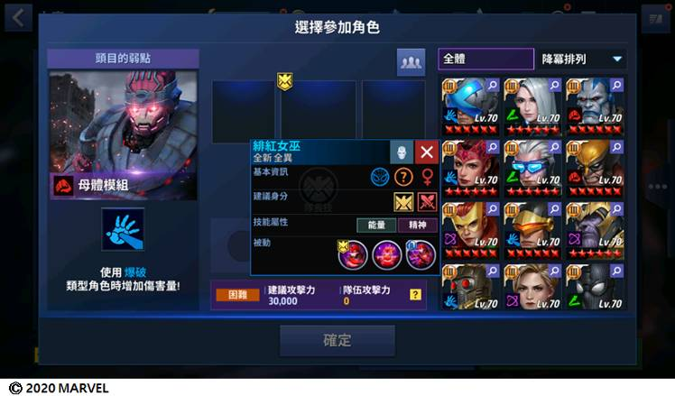

■ 9月16日(三) 07:00 ~ 14:00 維護通知
- 維護時間：9月16日(三) 07:00 ~ 14:00
- 維護內容：
1. 新增2名英雄
2. 新增2種制服
3. 新增8名潛力發掘角色與多瑪暮追加T-3
4. 新增魔比斯，艾爾莎.血石，月光騎士新覺醒技能
5. 新增危險室：極限模式
6. 聯盟戰爭極限變更
7. 未來通行新賽季進行及改善 & 新增特殊圖像
8. 新增1種制服收藏
9. 其他事項
10. 遊戲錯誤修正事項
▣ [更新維護進行事項通知]
1.領取時間：9月16日(三) 維護後 ~ 9月20日(日) 22:59為止
2.發放道具
※ 透過英雄寶箱: ★5獲得的角色獎勵說明如下：
- 擁有此角色，且為★5以上時，將發放128個生體認證。
- 在未擁有此角色或此角色為★4以下時，自動進階為★5角色。
※ 更新後只能登入新版本，維護前請務必在遊戲內完成帳號的綁定。
※ 更新日程或內容將視實際狀況可能會有所調整 。
※ 請注意，更新期間增幅器與收件匣剩餘時間仍會繼續計時。
為了對抗於拉維斯加斯發生的強烈的超現實現象，
集結了以奇異博士為中心的英雄們！
為各位介紹以參考MARVEL漫畫故事線[奇異博士：詛咒]，
而進行的《MARVEL:未來之戰》的9月更新。
新增猩紅蜘蛛，魔比斯兩名新角色！
新增奇異博士，多瑪暮2種新制服！
多瑪暮T-3與艾爾莎.血石，月光騎士，魔比斯3位角色覺醒，
請邂逅獲得新力量的角色們吧！
並且準備好了適合他們展開戰鬥的改編！
希望各位特工去挑戰多樣環節與頭目們等待著的
危險室：極限模式與改善後的聯盟戰爭！
除此之外角色職責標誌改善等追加內容已準備就緒，
閱覽下方內容後，享受9月更新吧！
▣ 新增2名新角色
從蜘蛛人的複製中蛻變，尋找新道路的猩紅蜘蛛，
擁有吸血鬼之力的生物學家魔比斯來到了《MARVEL:未來之戰》！
※新英雄的技能以T-2，技能等級6為基準。
▣ 新增2種制服
與超自然現象的鬥爭中，不可或缺的魔法達人們！
為奇異博士，多瑪暮追加了新制服！
- 月光騎士，刀鋒戰士，惡靈戰警的制服可於更新後在遊戲中確認，
將透過單獨的通知後才會開放，請參考！
※ 新制服的變更技能以技能等級6為基準。
※ 2種新制服於活動期間以優惠價格進行販售，
活動結束後也可透過英雄圖鑑及制服室確認與購買新增制服。
▣ 新增8名潛力發掘角色
透過9月更新將開放
猩紅蜘蛛、魔比斯、惡靈戰警、刀鋒戰士、艾爾莎.血石、月光騎士、多瑪暮、鐵拳俠總計8名角色的潛力。
以上角色可將等級升至70級。
▣ 新增艾爾莎.血石、月光騎士、魔比斯潛力覺醒
透過9月更新，以上3名角色已可進行潛力覺醒！
邂逅一下艾爾莎.血石、月光騎士、魔比斯的新技能吧~
▣ 新增全新內容危險室：極限模式
與特工的角色一起攻略多樣形式的危險室，
挑戰危險室極限模式中的排名吧！
追加了新內容——危險室：極限模式。
危險室極限模式入場條件：
▶擁有3名以上T-3或潛力突破角色
▶熟練度等級達至5以上
1.極限模式中可使用擁有的達成T-3或潛力突破的角色。
- 所有特工同時選擇角色，相同隊伍可重複使用！
- 極限模式中的專屬技能將於配對時隨機賦予！
- 極限模式中可再次使用相同的角色，但再次使用同一角色時，會有懲罰！
- 極限模式的角色會適用特工裝備中的同位素-8，漫畫卡，強化烏魯，裝備等。
[同一角色再次使用懲罰]
- 勝利，失敗時不獲得或扣除階級分數。
- 無法獲得每日戰鬥參與獎勵。（可獲得每日勝利獎勵，神盾局支援獎勵及熟練度分數）
- 懲罰以每日23:00為基準初始化。
2.新增極限模擬。
[極限模擬]
頭目的HP減少至一定水準以下時，發動“極限模擬”。
角色與頭目全都無法相互攻擊，
極限模擬發動期間，需躲開機制並生存下來！
- 極限模擬發動時，危險室變為紅色！
- 極限模擬發動時，一定時間內不會再生成技能能量。
3. 變更危險室部分獎勵。
- 新增了與勝負無關的每日戰與參與獎勵。
- 因追加極限模式等級，刪除了一般模式等級系統與各等級獎勵。
- 除此之外的獎勵一般模式 / 極限模式相互共享獎勵次數。
EX）極限模式中每日戰鬥參與獎勵全部領取後，
於初始化之前，在一般模式中無法領取戰鬥參與獎勵。
- 等級獎勵中，有較低的機率可獲得大量的X基因或生體認證！
[一般模式等級獎勵刪除相關通知事項]
※ 9月6日 23:00 ~ 13日 22:59為止，進行的一般模式的等級獎勵，
可於9月13日 23:00 ~ 20日 22:59進入危險室時，以原先同一方式獲得。
※ 9月13日 23:00 ~ 16日更新前為止，進行過1次以上危險室時，
將透過收件匣發放挑戰者等級獎勵寶箱。
4. 對比一般模式，於極限模式中可獲得更多的熟練度點數。
5. 根據熟練度等級，於危險室中適用額外圖像。
6. 改善後，於危險室一般模式中，選擇角色期間未選擇任何角色時，
將於可選擇角色名單中，選擇出選擇率最高的角色。
7. 分別適用了一般/極限模式中的逃跑，非活躍懲罰等。
▣ 聯盟戰爭極限變更
根據每日變化的關卡，成長角色們吧！
並且攻略冰極獸多樣的特殊效果與弱點，獲取優異分數吧！
1. 於上方顯示擁有目前冰極獸的弱點效果技能的角色。
- 擁有推薦技能效果的角色以推薦角色顯示於上方。
- 即使未將推薦英雄編列於隊伍中也可進行，但推薦角色的上場對攻略冰極獸有利！
EX）使用擁有灼傷效果的技能時，可干擾冰極獸的怒吼！
2. 追加新的冰極獸，
每隻冰極獸可攻略的弱點效果都各不相同。
冰極獸在戰鬥途中使用怒吼技能。
於冰極獸怒吼前，將暫時暴露弱點。
在那瞬間使用擁有弱點效果的技能時，
可干擾冰極獸的怒吼。
露出弱點期間，擁有相應效果的技能按鈕會鮮明地顯示。
成功阻止冰極獸的怒吼時，可獲得更高的分數。
但失敗時，將會面對變得更加強大的冰極獸。
[可攻擊弱點時會出現訊息！]
[失敗時將追加多種效果，請注意。]
▣ 未來通行新賽季進行及改善&新增特殊圖像
更新後，將會開始未來通行第5季。
未來通行中可獲得多樣獎勵與特殊圖像！
[未來通行獎勵通知]
- 購買未來通行商品後立即適用效果，因此無法進行退費，請參考。
- 請留意開啟的傳說 / 神話未來通行只適用於相應賽季，
賽季結束後無法獲得獎勵，請確認好賽季剩餘期間！
- 神話通行可在購買傳說通行之後進行購買。
- 賽季結束前夕無法購買傳說 / 神話通行，請在遊戲內確認販售時間。
並且新增了可代表特工的特殊圖像！
來看看未來通行獎勵2種/還有可在日後開啟的活動商店中見到的1種吧~
▣ 新增1種制服收藏
可欣賞9月更新的帥氣制服與新增英雄們。
完成指定的條件後完成收藏時，還將會發放獎勵，請多多使用。
▣ 新增1種制服收藏
1. 改善後，選擇角色畫面中可確認各角色的簡略資訊。
- 可於入場內容後，在選擇隊伍或英雄情報等中進行確認！
- 可確認角色的基本資訊與被動技能及建議身分！

2. 修正了部分商品跳窗中，無法確認寶箱或選擇券裡包含的道具的現象。
3. 變更了吸血效果。
- 追加吸血後至再次吸血時的冷卻時間。
- 適用原有吸血效果變更角色
：刀鋒戰士
※ 新角色"魔比斯"適用了變更後的吸血效果，請參考。
4. 修正了哨兵機器人被動技能的說明。
- 原先：一定機率無視承受的最大屬性傷害
- 變更：一定機率無視承受的最大傷害
※ 明確地修正了關於技能效果的說明，實際技能效果與原先一致。
5. 變更了技能說明的排序方式。
- “技能效果變更”，“使用手動操作時，角色會自動持續攻擊附近的敵人。”等技能說明於上方顯示。
- 適用對象：角色的主動技能，制服技能，被動技能
6. 修正了暴風女[異人族 vs X 戰警]制服模型。
▣ 修正遊戲錯誤事項
1. 修正了大廳通知畫面中首次儲值活動剩餘時間未正常顯示的現象。
2. 修正了使用IOS設備時，進入主畫面大廳右側上方橫幅 - YouTube橫幅後，回歸時發生當機的現象。
3. 修正了史詩任務中自動重複時，錯誤地顯示回歸玩家追加獎勵的現象。
4. 修正了角色制服室中，目前未販售的制服中出現“以折扣價購買！”文字的現象。
5. 修正了炫音[現代]角色非戰鬥狀態下，手的模型非正常大小的現象。
下次更新也會準備好新的英雄與遊戲內容改善後回來的。